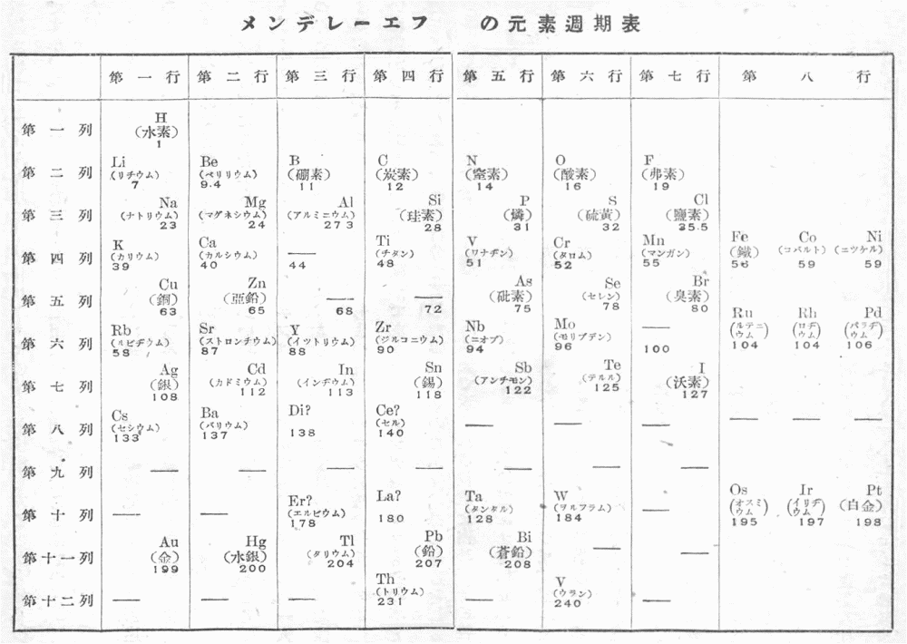

物質の元素には、たくさんの異なった種類がありますが、今ではその原子量の最も小さい水素から、それの最も大きいウランに至るまでの間に、全体で九十二
もっともそのなかには、二、三の例外の元素があって、そこでは原子量の大いさの順をとりかえなくてはなりませんが、そのほかはすべて原子量の順にそうなってゆくので、つまりそれはある週期をもって同様の性質の元素が現れて来るということになりますから、この事を元素の週期律と名づけるのです。
そこで、このようにして同様の性質をもつ元素を原子量の小さい方を上にして縦に並べてゆきますと、横向きには大体において原子量の増してゆく順に並ぶことになります。かような元素の表を、普通に週期表と呼んでいますが、ともかくこの事実は非常におもしろい、またいかにも目立った事がらなのであります。
ところで、かような事実のあるということを始めて見つけ出したのは、ロシヤの物化学者ドミトリ・イヴァノヴィッチ・メンデレーエフという人でありまして、それは一八六九年のことでありますから、今からは七十余年以前に当るのです。しかも、このような週期律が見つけ出されたおかげで、その後に新しい元素を発見するのに大層都合がよくなったばかりでなく、ずっと近頃になっては、めいめいの元素の原子がどのような構造をもっているかということに対する理論を形づくってゆくのにも大いに役立ったことなどを考え合わせてゆきますと、これはまことに重要な発見であったと
メンデレーエフは一八三四年の二月九日に、シベリアのトボルスクという町で生まれました。祖父が始めてこの町に来て、印刷工場を設け、新聞を発行していたのでしたが、父の代になってはそれも止めて、中等学校であるギムナジウムの校長を勤めました。ところがその子どもがたくさんあって、このドミトリ・イヴァノヴィッチは十四人の兄弟の一番の末子であったのですが、ごく幼ない頃からすぐれた才能をもっていたので、その将来に大いに望みをかけて育てられたのでした。
ドミトリはこのような環境のなかで育ってゆきましたが、やがてトボルスクに追放されて来た一人の青年にいろいろと科学のことを教えられ、元来が数学や科学を好んでいた彼の才能は、そのおかげでずんずんと進んでゆきました。そしてそれを見て母親も大いに喜び、末たのもしく思っていたということです。ドミトリはやがてギムナジウムに入学し、数年の後にそこを卒業しましたが、この間に母の経営していたガラス工場がうまく立ちゆかなくなったばかりでなく、父も眼疾の外に肺をわずらって亡くなってしまい、母はひとりでさまざまの苦労を重ねました。その年齢ももはや五十七歳にもなっていたので、健康も衰えていたのですが、そのうちに工場が火事で焼けてしまいました。それでも母はくじけることなく、ドミトリを大学に入学させたいと思って、トボルスクから
ドミトリはこの後、実に一生懸命に勉強しました。そして一八五六年に大学をすぐれた成績で卒業し、クリミヤ地方の学校に教師として赴任しましたが、やがて再びセント・ペテルスブルグに戻り、次いでフランスのパリやドイツのハイデルベルグに留学し、当時の名だかい学者であったレノー、ブンゼン、キルヒホッフなどの下で大いに研究を行ったので、これが彼の知識をすばらしく高めることになりました。そして一八六一年に故国に帰り、高等工業学校の教授に任ぜられましたが、一八六六年にはペテルスブルグ大学の教授となりました。
かくしてメンデレーエフは学者として大いに尊敬を受け、後にはヨーロッパの諸国の学会から名誉会員に推されたり、
メンデレーエフの遺した研究はいろいろありますが、そのなかで最も重要なものが元素の週期律の発見であることは、既に述べた通りであります。元素にこのような週期性があるということは、それより少し以前の一八六四年にイギリスのニューランヅが見出し、大体において八番目毎に性質の類似した元素が現れるというので、これをオクターヴの法則と名づけましたが、この事はまだ一般に認められなかったのでした。ところが、一八六八年になってドイツのユリウス・ローター・マイヤーという学者が同様な週期性を見出だし、これを学会で発表しました。このマイヤーの研究においては、
最初に記したように、今では九十二

この表のなかで、元素の名の下にある数字はその頃認められていた原子量でありますが、今ではそれらも更に精密に測られるようになったので、ここに記してあるのとは幾らか違っているのもあります。また、その外に、元素の週期性は、実はこのような原子量によるのではなく、原子の構造の上から定められる原子番号という数に依るのであることも今ではわかって来たのですが、メンデレーエフの時代にはそれらは全く知られていなかったのですから、彼が原子量に基づいてこの週期性を見つけ出したのは、確かにすぐれた卓見であったのですし、また最初にも述べましたように、それが新しい元素の発見や原子構造の理論をつくってゆく上にも、大いに役立ったのでした。現在の書物に載せられている元素週期表は、その後のいろいろな研究によって訂正されて来ているので、これとはいくらか違っていますが、メンデレーエフの最初につくったこの表がその基礎になっているのですから、その意味でこの表は歴史的に重要な価値をもっていると
週期表はこのように大切なものでありますが、それにも拘わらずメンデレーエフが初めてこれを発表した頃には、学界のなかでもまだそれ程にこの表の重要な意味が認められなかったので、ある人たちなどは、それを徒らな
週期律の発見はまことにメンデレーエフの最も顕著な仕事というべきでありますが、このほかにも彼の物化学の上での研究はいろいろあるのです。しかしここではそれらについてお話しすることは、あまりこまかい問題に立ち入ることにもなりますから、省くことにします。
もっともそのなかで石油についての研究は、同じくメンデレーエフの重要な仕事として記憶されなくてはならないのでしょう。それは一八七六年にロシヤの政府から派遣されて、アメリカのペンシルヴァニヤの油田を視察したことから始まったのですが、それ以前にも南部ロシヤの油田について研究したことはあったのでした。
このほかにメンデレーエフは物化学に関する有益な書物をたくさんに著述しているのですが、これらはその当時はもちろんのこと、それから今に至るまで多くの人々のためにどれだけ役に立ったか知れません。
ロシヤの国にも昔から多くの名だかい科学者が出ていますが、しかしこのドミトリ・イヴァノヴィッチ・メンデレーエフは、そのなかでも最も輝かしい一人であったと
「幻想に囚われてはいけない。
頼るべきものは実行である。
ひたすらに求むべきは
神と真理の
いつもそれを望むがよい。」
彼がこの言葉をいつも座右の銘として、その大きな仕事をなし遂げたことは、また私たちの見のがしてはならない
 」は「ますます」に、置き換えました。
」は「ますます」に、置き換えました。